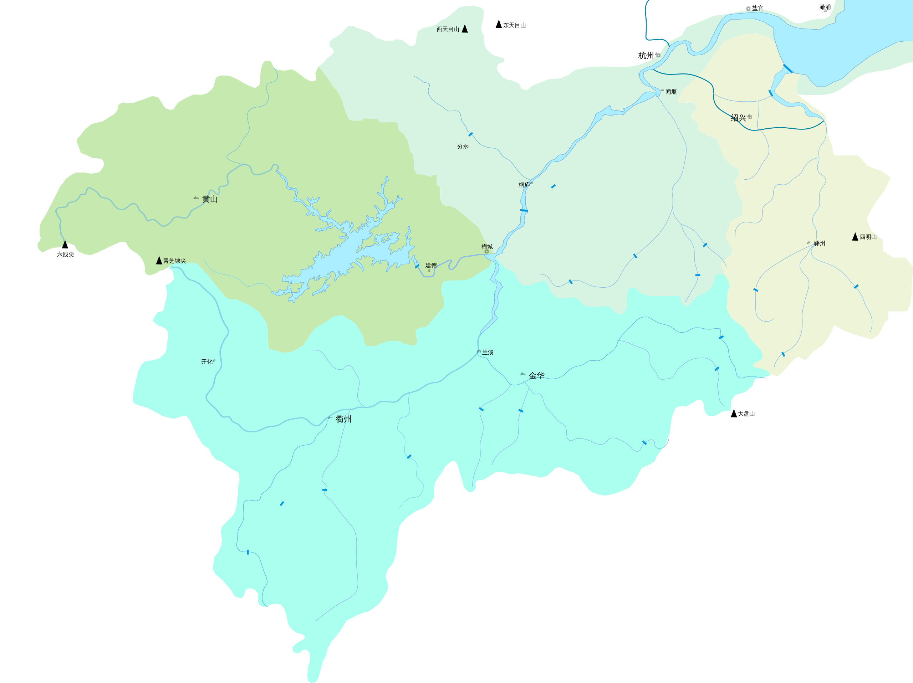

实际上钱塘江在民国之前仅指钱塘县流域的浙江，可以从下面的流域图看到杭州附近流域呈之字型，故得名折江、之江。钱塘江流域面积超过浙江省域面积的一半让我有些惊讶，而且主源（安徽省休宁县青芝埭尖北坡，810m）和次源（安徽省休宁县六股尖东坡，1350m）原来都在黄山。
浙江省是以浙江为名，唐朝才出现以浙江为名的地方政府，而杭州早在秦朝就已经是县了。
秦王政二十五年(公元前222年)，秦灭楚，在今境内置钱唐(含杭州城区)、余杭两县，属会稽郡。
钱塘江
钱塘江，古名浙江、渐江、浙河，又称之江、折江、罗刹江，是中国浙江省第一大河，发源于安徽省黄山，流经安徽、浙江二省，河流全长688千米，流域面积5.56万平方千米，占省域面积的一半以上。年均流量442.5亿立方米，河口潮汐水力资源理论蕴藏量为472万千瓦特。钱塘江潮被誉为“天下第一潮”。

一般认为，钱塘江古称“浙江”，亦名“折江”或“之江”，最早见名于《山海经》，自三国时期开始有“钱唐江”的称谓，原来指代流经钱唐县（今杭州）的河段，自民国时期开始指代整个流域。杭州一带江流曲折，风波险恶，故也有“之江”的称呼。
浙江
浙江省，简称“浙”，是中华人民共和国东部的一个沿海省份，位于长江三角洲南翼，北邻上海市、江苏省、西依安徽省、江西省、南接福建省，陆域面积10.55万平方公里，占全国的1.1%（全国34个省级行政区），是中国面积较小的省份之一。海域面积26万平方公里，也是中国列岛最多的省份。2022年，全省常住人口6577万人，位居全国第八位，是全国人口增长速度最快的省份之一。省政府駐地為杭州市西湖区省府路8号。
浙江历史悠久，是中华文明的发祥地之一（良渚，3300–2300 BC）。
京杭大运河
京杭大运河北起北京通州五河交汇处，南至杭州，流经北京、天津、河北、山东、江苏和浙江四省二市，沟通海河、黄河、淮河、长江和钱塘江五大水系，全长1794公里。